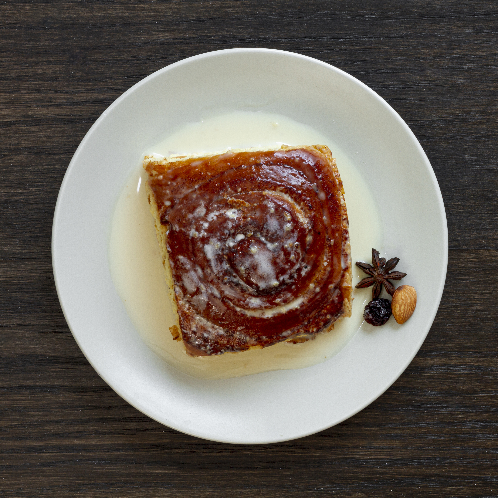

Malva Pudding

Description
Ingredients
- 1 loaf White bread (unsliced)
- Sauce: 1 cup Heavy cream, 1/2 cup Butter, 1/2 cup Sugar, 1/4 cup Hot water.
Steps
- Beat sugar and egg until fluffy; mix in the jam.
- Sift flour and baking soda; add to the egg mixture alternately with the milk.
- Pour into a greased baking dish and bake at 180°C (350°F) for 30–35 minutes.
- While baking, melt the sauce ingredients together in a pot.
- As soon as the pudding comes out of the oven, poke holes in it and pour the hot sauce over the entire cake. Let it soak in for 10 minutes before serving with custard or ice cream.
Home